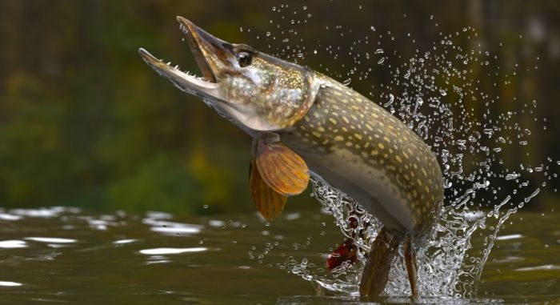
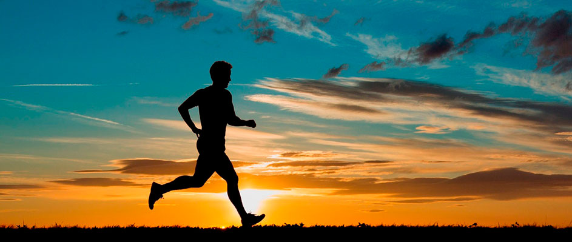
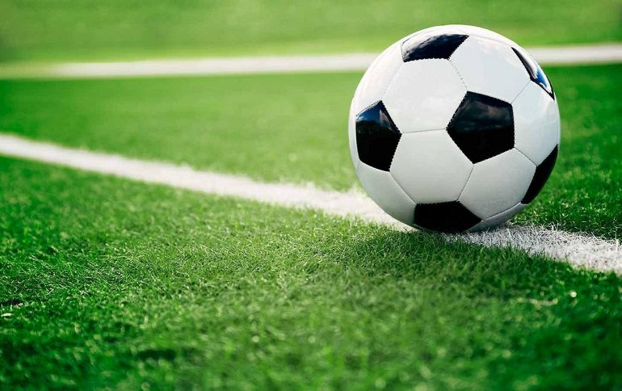

Рыбалка
Рыбалка - увлекательное занятие, которое предоставляет возможность отдохнуть на природе и насладиться покоем. Она позволяет снять стресс, насладиться тишиной и спокойствием в окружении природы. Благодаря рыбалке можно испытать чувство азарта и радости, когда удалось поймать крупную рыбу. Помимо того, рыбалка является отличным способом провести время с друзьями или близкими. При этом рыбалка учит терпению, сосредоточенности и технике. Сам процесс ловли также может представлять особый интерес, так как требует анализа и прогнозирования поведения рыбы. В целом, рыбалка – это прекрасное увлечение, которое позволяет соединиться с природой и насладиться моментами спокойствия и удовлетворения.
Достижение: поймал щуку на 3кг!
Бег
Бег – увлекательное занятие, которое приносит не только физическую пользу, но и удовлетворение. Он позволяет укрепить здоровье, улучшить физическую форму и выносливость. Бег помогает снять стресс, повысить настроение и улучшить работу сердца и легких. Одно из основных преимуществ бега – свобода выбора трассы и гибкость по тренировочному графику. Он помогает насладиться красотой природы и окружающего пейзажа, а также подарит ощущение свободы и уединения. Бег развивает силу воли, самодисциплину и выносливость, а также способствует сбалансированному образу жизни. Все это делает бег привлекательным и увлекательным хобби для любителей спорта и активного образа жизни.
Занял первое место в школе на забег дистаницей 2км.
Футбол
Футбол – увлекательное занятие и самый популярный вид спорта в мире. Он объединяет миллионы людей и создает атмосферу соревнования и восторга. Футбол позволяет не только заниматься физической активностью, но и развивать координацию, стратегическое мышление и командный дух. В процессе игры, игроки испытывают яркие эмоции и адреналин, когда забивают гол или совершают удачную передачу. Футбол также способствует взаимодействию и общению между участниками команды. Он помогает развить дисциплину, выносливость и научиться работать в коллективе. В целом, футбол – это захватывающее хобби, которое приносит радость, спортивные достижения и новые дружеские связи.
Просто обожаю пинать круглые предметы...)